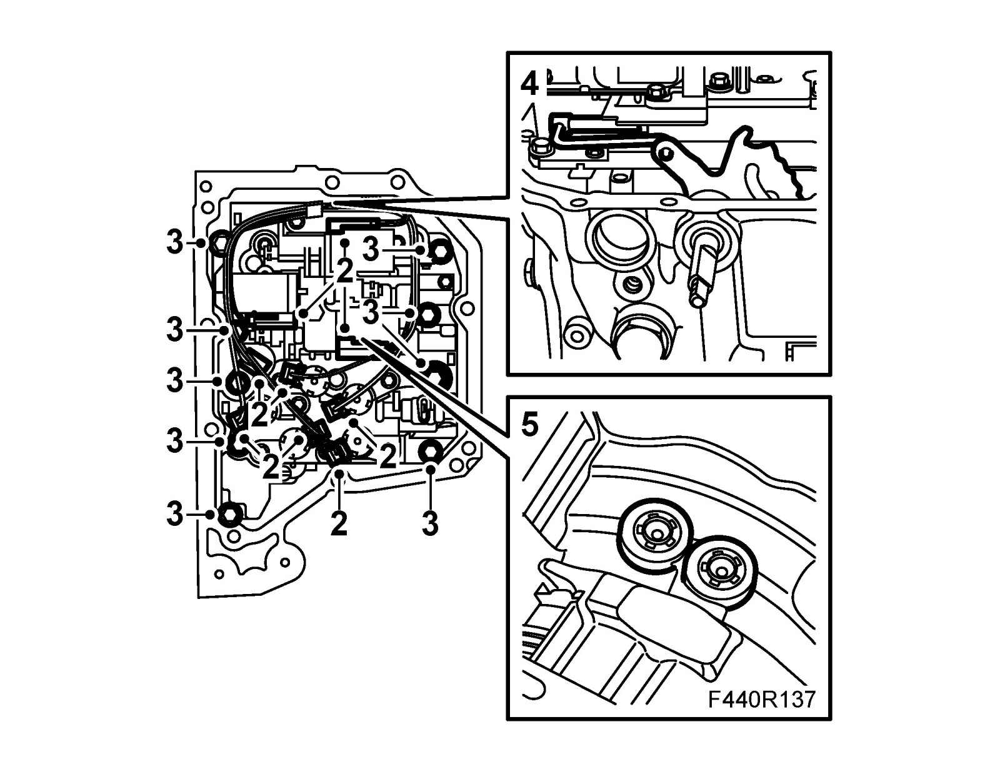

Valve Body: Service and Repair
Valve housingTo remove
1. Remove the Valve housing cover.
2. Detach the solenoid electrical connections and the temperature sensor.

3. Undo the marked bolts with 10 mm heads which secure the valve housing.
Note
Start with the two bolts furthest down to the left which secure the cover to the oil ducts and save the two top retaining bolts until last. The bolts have different lengths.
Important
The ducts are filled with oil.
4. Carefully detach the manual valve from the selector lever out of the attachment lug and carefully remove the valve housing downward.
Note
Make sure that the two O-rings located inside the valve housing do not fall away.
5. Replace the O-rings if necessary.
To fit
1. Fit the O-rings. Fit the valve housing in position.
Note
Carefully guide the selector lever arm into position and fit the valve housing on the gearbox.
2. Fit the valve housing.
Tightening torque 7 Nm (5 lbf ft)
Note
The bolts have different lengths.
3. Connect the solenoid electrical cables and fit the temperature sensor.
4. Fit the Valve housing cover.
5. After valve housing replacement, carry out Adaptation, resetting. Programming and Relearning